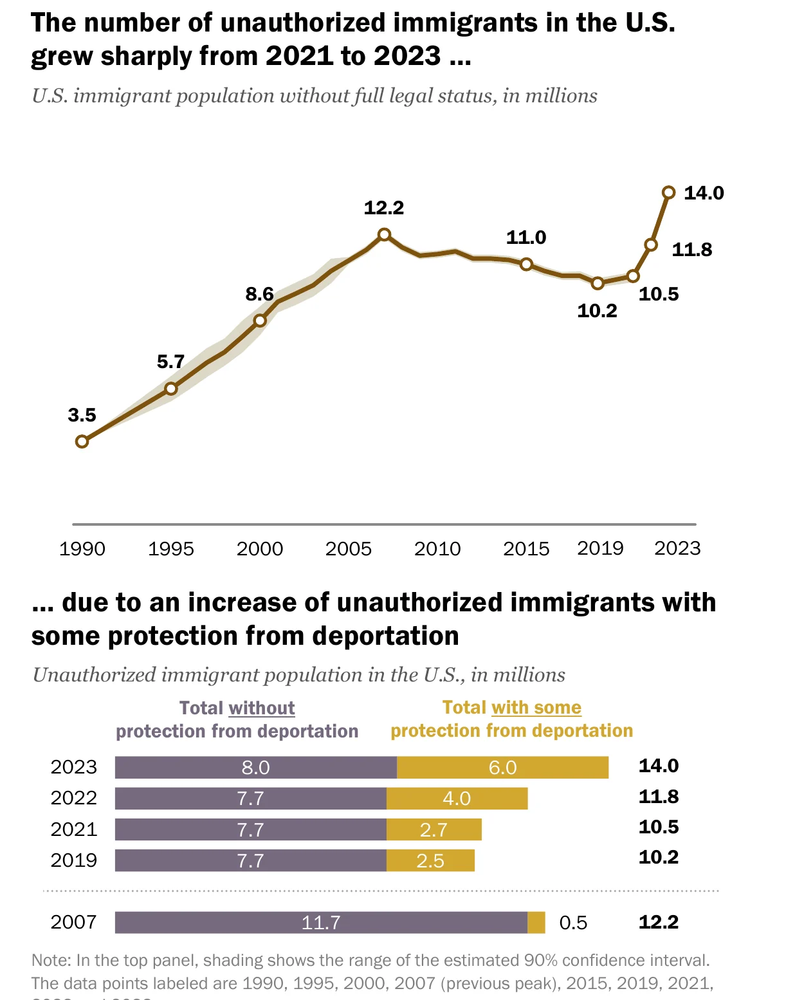
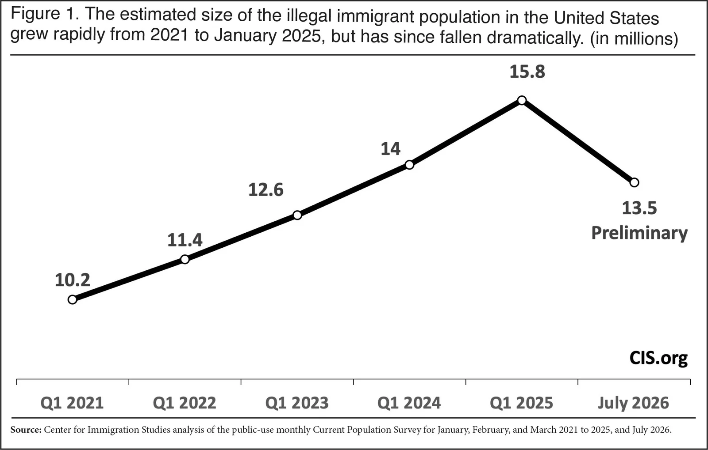
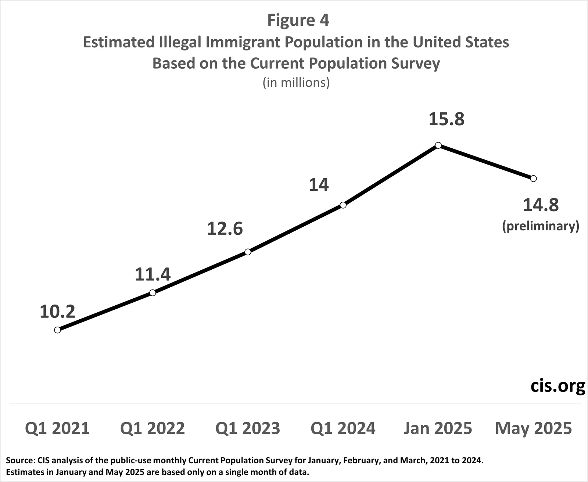
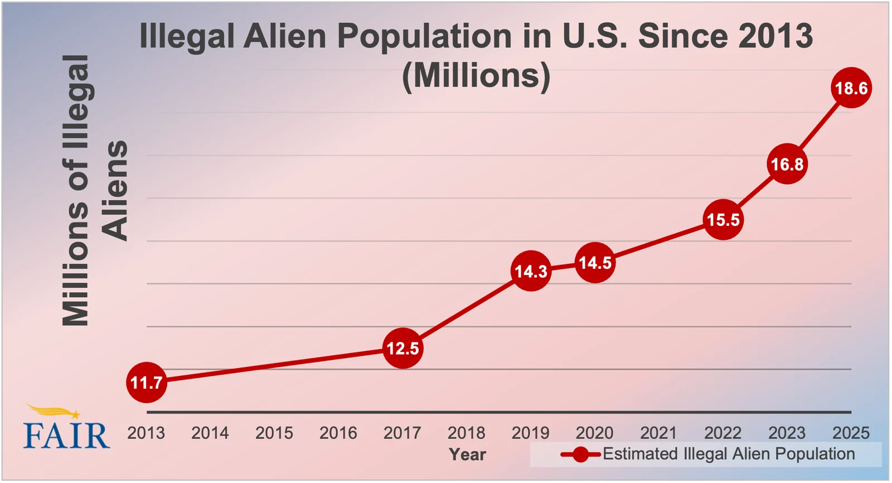
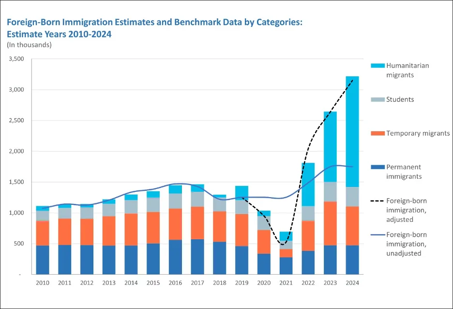
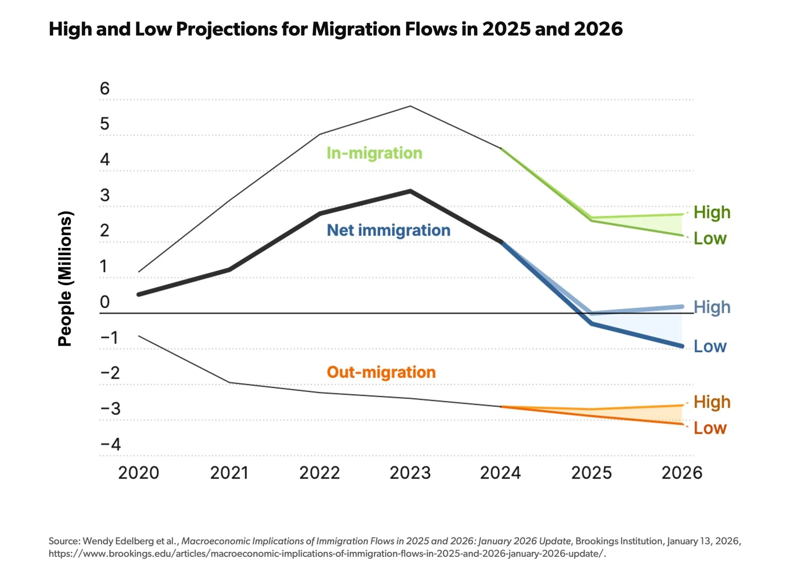
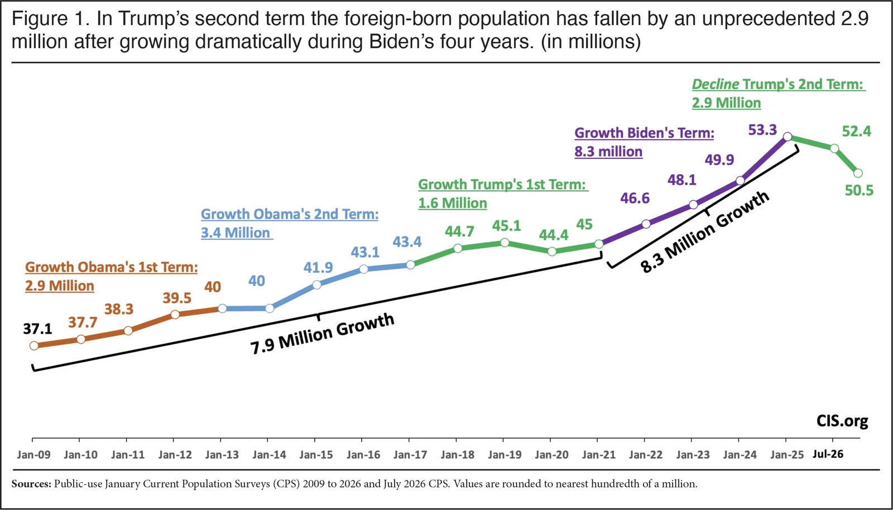
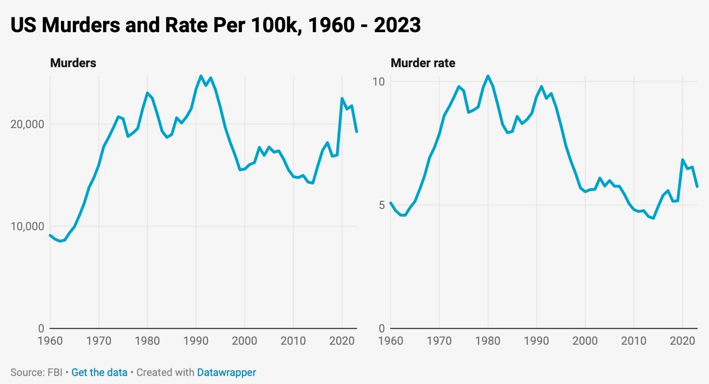
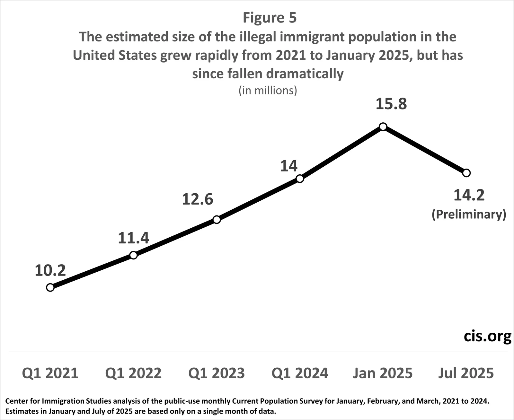

Q4. How many unauthorized immigrants are there?

Unauthorized immigrant population, 1990-2023: record 14.0 million. Pew Research Center | Date: 2025-08-21. Unauthorized population estimate with 90% band, plus those with temporary protection. Residual method from ACS/CPS; includes about 6M with temporary protection (TPS, parole, pending asylum)
Source: https://www.pewresearch.org/race-and-ethnicity/2025/08/21/u-s-unauthorized-immigrant-population-reached-a-record-14-million-in-2023/ https://www.pewresearch.org/wp-content/uploads/sites/20/2025/08/RE_2025.08.21_Unauthorized-Immigrants_REPORT.pdf

Estimated illegal immigrant population, Q1 2021-Jul 2026: 15.8M peak, 13.5M now. Center for Immigration Studies (CIS), Richwine and Camarota | Date: 2026-09-14. Illegal population estimate from the monthly CPS. Residual method; counts parolees and asylum applicants as illegal; undercount adjustment
Source: https://cis.org/Richwine/Illegal-Immigrant-Population-Was-About-135-Million-July-2026 https://www.cis.org/sites/default/files/2026-09/richwine-pop-9-11-f1_0.jpg

Estimated illegal immigrant population, CPS-based, Jan 2021-May 2025. Center for Immigration Studies (CIS) | Date: 2025-06-19. Earlier CIS series (15.8M Jan 2025 to 14.8M May 2025, preliminary). Same residual method
Source: https://cis.org/Report/Illegal-Population-Down-January https://cis.org/sites/default/files/2025-06/6-25-figure-4b.png

Illegal alien population estimates, FAIR series to 2025 (18.6M). Federation for American Immigration Reform (FAIR) | Date: 2025-03-07. FAIR estimate of the illegal population by year. FAIR adds encounters, gotaways and an assumed undercount of recent arrivals, so it runs higher than Pew, CIS or DHS
Source: https://www.fairus.org/issue/how-many-illegal-aliens-are-united-states-2025-update https://www.fairus.org/sites/default/files/images/2025_pop_Figure1.png

Foreign-born population estimates and benchmark data by category, 2010-2024. Federation for American Immigration Reform (FAIR) | Date: 2025-03-07. FAIR's decomposition of the foreign-born by legal category. FAIR method
Source: https://www.fairus.org/issue/how-many-illegal-aliens-are-united-states-2025-update https://www.fairus.org/sites/default/files/images/2025_pop_Figure2.png

High and low projections for U.S. migration flows, 2020-2026 (net migration negative in 2025). Brookings Institution and American Enterprise Institute (Edelberg, Veuger, Watson) | Date: 2026-01-13. In-migration, out-migration and net migration (all statuses), millions. Net migration 2025: -295,000 to -10,000; 2026: -925,000 to +185,000
Source: https://www.aei.org/research-products/report/macroeconomic-implications-of-immigration-flows-in-2025-and-2026-january-2026-update/ https://www.aei.org/wp-content/uploads/2026/01/01-BrookingsStan-V-2048x1490.jpeg

Foreign-born population by presidential term, CPS. Center for Immigration Studies (CIS), Camarota | Date: 2026-09-03. Total foreign-born (legal plus illegal), millions. Census CPS, not adjusted for undercount
Source: https://cis.org/Report/Census-Bureau-Survey-Shows-Total-ForeignBorn-Down-29-Million https://www.cis.org/sites/default/files/2026-09/camarota-imm-pop-f1.jpg

X post: illegal immigrant population growth by period. @David_J_Bier (David Bier, Cato Institute) on X | Date: 2024-09-23. Change in the illegal population, compared with crime trends. Bier: the 1990s and 2021-24 were the fastest growth periods
Source: https://x.com/David_J_Bier/status/1838238502145658900 https://pbs.twimg.com/media/GYK7wAhWgAAXeh6.jpg

X post: illegal population down 1.6 million in six months (CIS, Aug 2025). @CIS_org on X | Date: 2025-08-13. CIS CPS-based illegal population estimate. Residual method; later revised (13.5M Jul 2026)
Source: https://x.com/CIS_org/status/1955704910101860387 https://pbs.twimg.com/media/GyPKmyUXUAAulUe.png